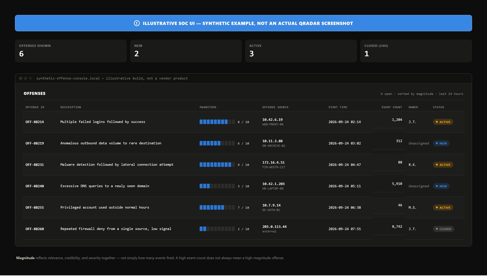

IBM QRadar, among the most widely deployed SIEM platforms, illustrates a point this paper keeps returning to: it prioritizes what an analyst sees, not how fast a human must act.
QRadar's core investigative unit is the offense: the record created when correlation rules judge related events or flows worth investigating together, rather than as separate queue items. That consolidation is QRadar's value as a SIEM; it carries no numeric handling target.
Every offense carries a magnitude score, weighted from three inputs — relevance (network impact), credibility (source corroboration), and severity (threat versus readiness) — into one normalized number, usually a ten-segment bar. IBM notes magnitude might not align to any single event inside an offense: high event volume doesn't guarantee high magnitude, as the figure below shows. It ranks IBM's queue, not a customer severity tier, with no response-time mapping.

Offenses and magnitude exist because of the Custom Rules Engine (CRE), which tests events, flows, and offenses against defined conditions and generates a response, typically an offense. Two constructs get mistaken for detections themselves: a building block is reusable rule logic — a tuning aid, generating no offense alone; a reference set is a dynamic, rule-populated watchlist (IPs, usernames) rules check automatically, making its tuning ongoing maturity work.
The earlier SIEM Ingestion Delay case study introduced QRadar's Device Time (the timestamp parsed from the event payload itself: the source's own report of when the activity happened) and Start Time (essentially that same source-reported timestamp — it falls back to arrival time only when the source provides none, so it is not when QRadar received the event). The field that actually marks when QRadar wrote the record is Storage Time, and it's the Start Time versus Storage Time gap — driven by network transit, source batching, queue depth, and license throttling, all before the CRE evaluates the record — that measures ingestion delay. IBM calls default correlation near real-time, a phrase, not a number, with no published latency guarantee.